![]()
Characteristic |
Overall |
RESIST |
TALOS |
p-value 2 |
|---|---|---|---|---|
| Age | 71 (62, 79) | 73 (63, 80) | 70 (60, 78) | <0.001 |
| Female sex | 279 (37%) | 143 (36%) | 136 (37%) | 0.7 |
| Pre-stroke PASE score | 108 (60, 161) | 91 (55, 127) | 133 (75, 196) | <0.001 |
| Living alone | 203 (27%) | 102 (26%) | 101 (28%) | 0.5 |
| Smoking | 0.004 | |||
| never | 269 (36%) | 157 (41%) | 112 (31%) | |
| current | 211 (28%) | 91 (24%) | 120 (33%) | |
| prior | 262 (35%) | 135 (35%) | 127 (35%) | |
| High alcohol consumption | 69 (9.2%) | 43 (11%) | 26 (7.3%) | 0.074 |
| Hypertension | 418 (55%) | 241 (61%) | 177 (49%) | <0.001 |
| Diabetes | 85 (11%) | 46 (12%) | 39 (11%) | 0.7 |
| Previous TIA | 44 (5.8%) | 31 (7.9%) | 13 (3.6%) | 0.011 |
| Previous AIS | 64 (8.4%) | 64 (16%) | 0 (0%) | <0.001 |
| Previous MI | 58 (7.6%) | 28 (7.1%) | 30 (8.3%) | 0.5 |
| Atrial fibrillation | 116 (15%) | 50 (13%) | 66 (18%) | 0.034 |
| Peripheral arterial disease | 24 (3.2%) | 14 (3.6%) | 10 (2.8%) | 0.5 |
| Active treatment | 363 (48%) | 189 (48%) | 174 (48%) | >0.9 |
| Admission NIHSS | 4.0 (2.0, 7.0) | 4.0 (2.0, 7.0) | 3.5 (2.0, 7.0) | >0.9 |
| Treated with tPA | 457 (60%) | 274 (69%) | 183 (51%) | <0.001 |
| Treated with EVT | 100 (13%) | 64 (16%) | 36 (9.9%) | 0.012 |
| 1
Median (Q1, Q3); n (%) |
||||
| 2
Wilcoxon rank sum test; Pearson’s Chi-squared test |
||||
SVD analyses and data exploration
Baseline data overview
Baseline overview including all available variables stratified by trial.
SVD data evaluation
Below, I will go through evaluating the SVD scores and subscores
Distribution
Below are printed and SVD sub-score summmary table.
Characteristic |
N = 762 1 |
|---|---|
| Microbleeds subscore | |
| 0 | 613 (80%) |
| 1 | 66 (8.7%) |
| 2-4 | 51 (6.7%) |
| 5-10 | 15 (2.0%) |
| >10 | 17 (2.2%) |
| Lacunes subscore | |
| 0 | 521 (68%) |
| 1 | 107 (14%) |
| 2 | 63 (8.3%) |
| 3-5 | 60 (7.9%) |
| >5 | 11 (1.4%) |
| Atrophy subscore | |
| 0: No atrophy | 244 (32%) |
| 1: Mild | 297 (39%) |
| 2: Moderate | 196 (26%) |
| 3: Severe | 25 (3.3%) |
| WMH subscore | |
| 0: Absent | 115 (15%) |
| 1: Punctate foci | 404 (53%) |
| 2: Beginning confluence | 168 (22%) |
| 3: Large confluent areas | 75 (9.8%) |
| 1
n (%) |
|
I think we could consider simplifying some of the scores, as we do not have any basis to claim the difference in steps is proportional or based on any evidence.
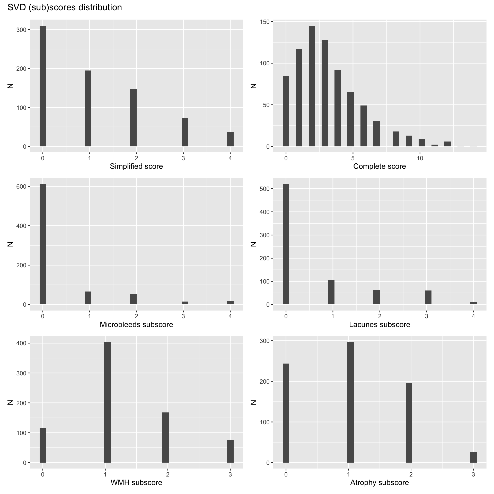
| Annotation | extended amended Olama et al 2020 | amended Olama et al 2020 | extended simple Olama et al 2020 | simple Olama et al 2020 | modified Huijts et al 2013 | Complete score | Best fit subscores | Clinical assumptions |
|---|---|---|---|---|---|---|---|---|
| Microbleeds subscore | ||||||||
| 0 | 0 | 0 | 0 | 0 | 0 | 0 | 0 | 0 |
| 1 | 1 | 1 | 1 | 1 | 1 | 1 | 0 | 0 |
| 2-4 | 1 | 1 | 1 | 1 | 1 | 2 | 0 | 1 |
| 5-10 | 1 | 1 | 1 | 1 | 1 | 3 | 0 | 1 |
| >10 | 1 | 1 | 1 | 1 | 1 | 4 | 1 | 2 |
| Lacunes subscore | ||||||||
| 0 | 0 | 0 | 0 | 0 | 0 | 0 | 0 | 0 |
| 1 | 0 | 0 | 0 | 0 | 1 | 1 | 0 | 1 |
| 2 | 1 | 1 | 0 | 0 | 1 | 2 | 0 | 1 |
| 3-5 | 2 | 2 | 1 | 1 | 1 | 3 | 0 | 1 |
| >5 | 3 | 3 | 1 | 1 | 1 | 4 | 1 | 2 |
| WMH subscore | ||||||||
| 0: Absent | 0 | 0 | 0 | 0 | 0 | 0 | 0 | 0 |
| 1: Punctate foci | 1 | 1 | 0 | 0 | 0 | 1 | 1 | 0 |
| 2: Beginning confluence | 2 | 2 | 1 | 1 | 1 | 2 | 1 | 1 |
| 3: Large confluent areas | 3 | 3 | 1 | 1 | 1 | 3 | 1 | 1 |
| Atrophy subscore | ||||||||
| 0: No atrophy | 0 | 0 | 0 | 0 | 0 | 0 | 0 | 0 |
| 1: Mild | 1 | 0 | 0 | 0 | 0 | 1 | 0 | 0 |
| 2: Moderate | 2 | 0 | 1 | 0 | 1 | 2 | 1 | 1 |
| 3: Severe | 3 | 0 | 1 | 0 | 1 | 3 | 1 | 1 |
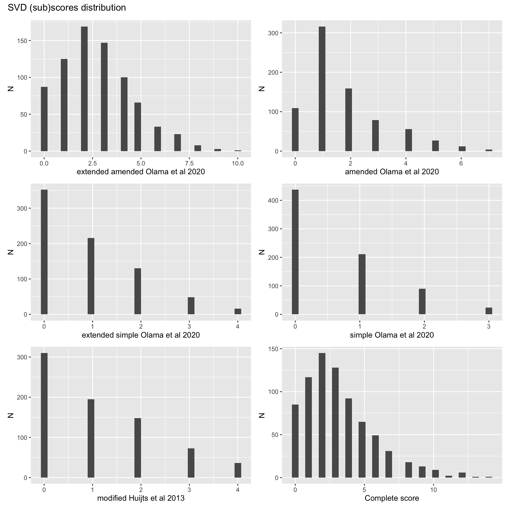
PA raw correlation
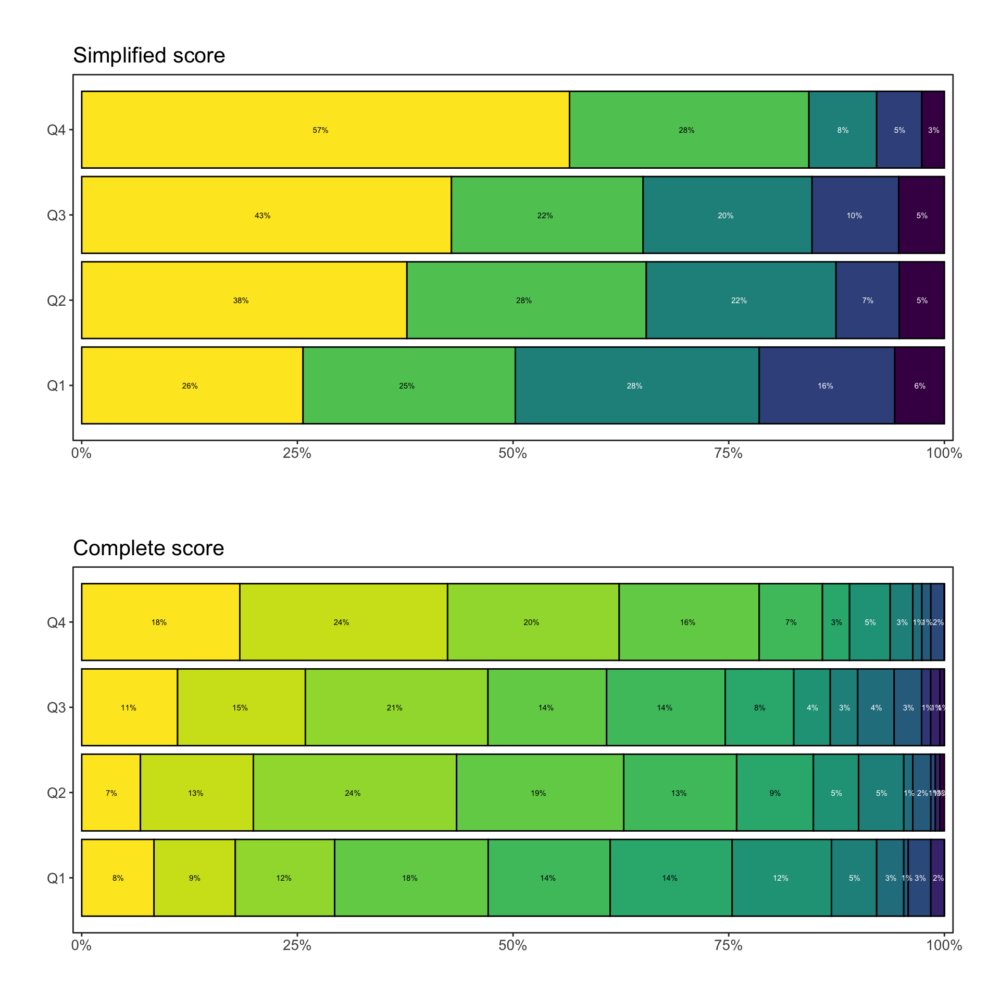
Main analyses predefined complete OLR analyses
..with and without adjustments for all considered variables.
Stacked regression table of all analyses
Characteristic |
No PA adjustment |
With PA adjustment |
||
|---|---|---|---|---|
OR 1 |
95% CI 1 |
OR 1 |
95% CI 1 |
|
| Simplified score | ||||
| Hypertension | 1.91 | 1.43, 2.54 | 1.88 | 1.41, 2.50 |
| Diabetes | 1.46 | 0.96, 2.22 | 1.40 | 0.92, 2.13 |
| Smoking | ||||
| never | — | — | — | — |
| current | 1.63 | 1.14, 2.34 | 1.55 | 1.08, 2.23 |
| prior | 1.44 | 1.04, 2.00 | 1.41 | 1.02, 1.97 |
| Previous ischemic event | 2.28 | 1.52, 3.41 | 2.21 | 1.48, 3.31 |
| Complete score | ||||
| Hypertension | 2.05 | 1.57, 2.68 | 2.03 | 1.55, 2.65 |
| Diabetes | 1.77 | 1.19, 2.63 | 1.69 | 1.14, 2.53 |
| Smoking | ||||
| never | — | — | — | — |
| current | 1.43 | 1.03, 1.99 | 1.38 | 1.00, 1.92 |
| prior | 1.18 | 0.87, 1.60 | 1.17 | 0.86, 1.59 |
| Previous ischemic event | 2.46 | 1.67, 3.64 | 2.39 | 1.62, 3.53 |
| Microbleeds subscore | ||||
| Hypertension | 1.90 | 1.29, 2.84 | 1.94 | 1.31, 2.90 |
| Diabetes | 1.18 | 0.67, 1.99 | 1.14 | 0.64, 1.94 |
| Smoking | ||||
| never | — | — | — | — |
| current | 1.14 | 0.71, 1.81 | 1.13 | 0.70, 1.80 |
| prior | 0.93 | 0.60, 1.44 | 0.94 | 0.61, 1.45 |
| Previous ischemic event | 1.60 | 0.96, 2.58 | 1.55 | 0.93, 2.50 |
| Lacunes subscore | ||||
| Hypertension | 1.82 | 1.32, 2.53 | 1.81 | 1.31, 2.53 |
| Diabetes | 1.81 | 1.15, 2.83 | 1.78 | 1.12, 2.79 |
| Smoking | ||||
| never | — | — | — | — |
| current | 1.53 | 1.02, 2.29 | 1.49 | 0.99, 2.25 |
| prior | 1.23 | 0.85, 1.78 | 1.23 | 0.85, 1.77 |
| Previous ischemic event | 2.98 | 1.97, 4.49 | 2.94 | 1.94, 4.44 |
| WMH subscore | ||||
| Hypertension | 1.59 | 1.19, 2.14 | 1.59 | 1.19, 2.15 |
| Diabetes | 1.14 | 0.74, 1.77 | 1.13 | 0.72, 1.75 |
| Smoking | ||||
| never | — | — | — | — |
| current | 1.32 | 0.92, 1.91 | 1.32 | 0.91, 1.90 |
| prior | 1.29 | 0.92, 1.81 | 1.30 | 0.93, 1.82 |
| Previous ischemic event | 1.41 | 0.93, 2.14 | 1.39 | 0.91, 2.12 |
| Atrophy subscore | ||||
| Hypertension | 1.75 | 1.29, 2.36 | 1.71 | 1.26, 2.32 |
| Diabetes | 1.80 | 1.13, 2.86 | 1.65 | 1.03, 2.64 |
| Smoking | ||||
| never | — | — | — | — |
| current | 1.20 | 0.82, 1.76 | 1.08 | 0.73, 1.58 |
| prior | 1.07 | 0.76, 1.52 | 1.00 | 0.70, 1.42 |
| Previous ischemic event | 2.41 | 1.58, 3.69 | 2.30 | 1.51, 3.53 |
| 1
OR = Odds Ratio, CI = Confidence Interval |
||||
Collinearity
Checking assumptions for each minimal model shows a serious issue with multi collinearity. Other meassures are fine.
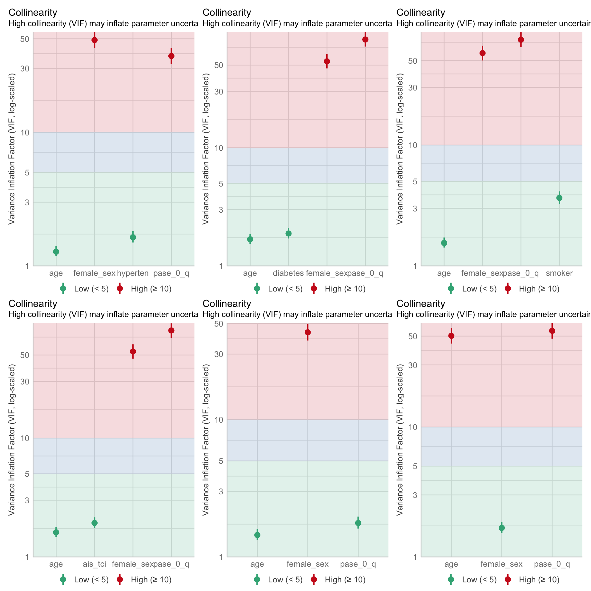
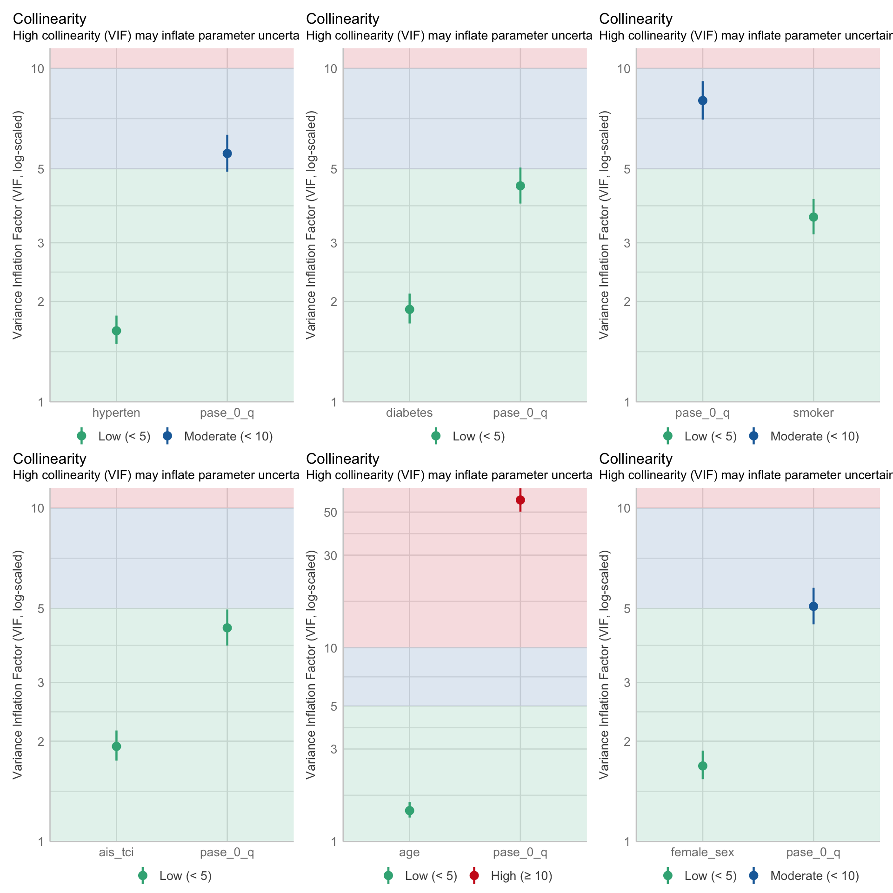
This can be solved by feature/variable reduction and exclude age and sex as variables in the model, as these are independently correlated to PASE.
Comparing these plot panels, smoking shows to be affected by age/sex adjustments.
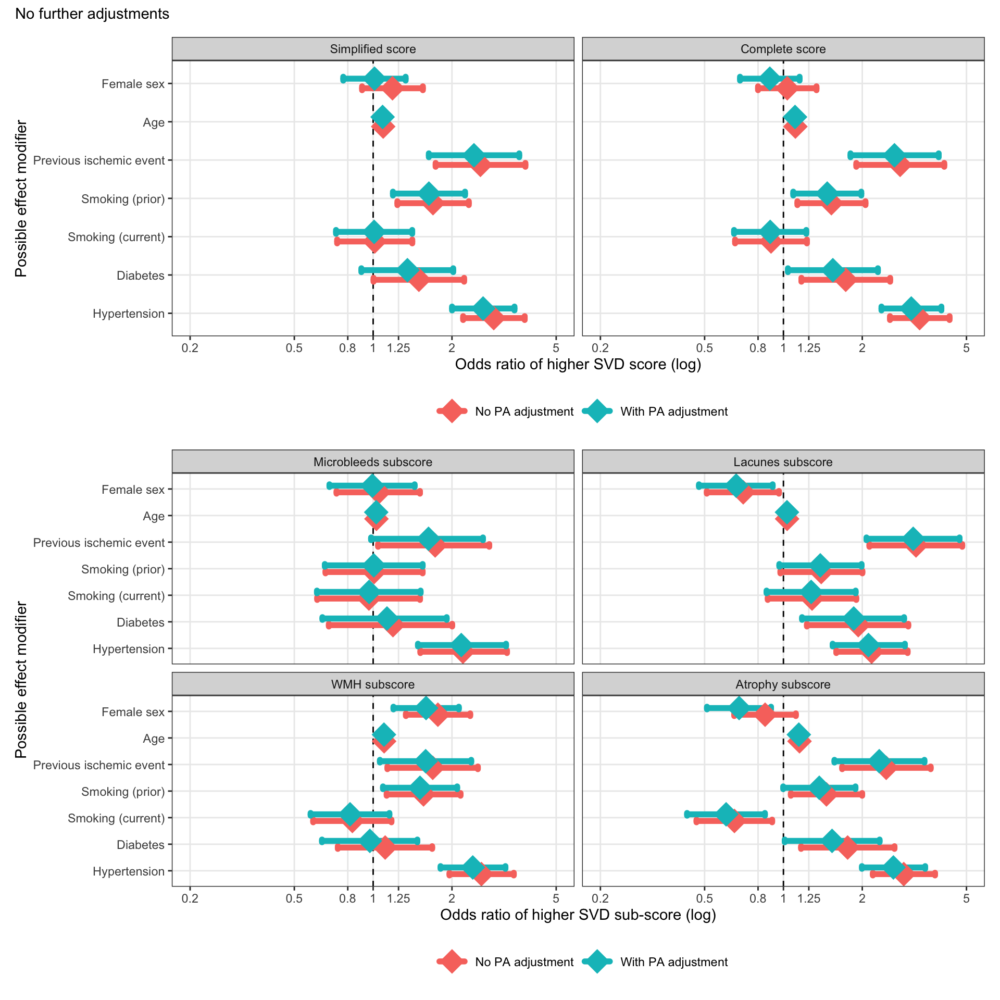
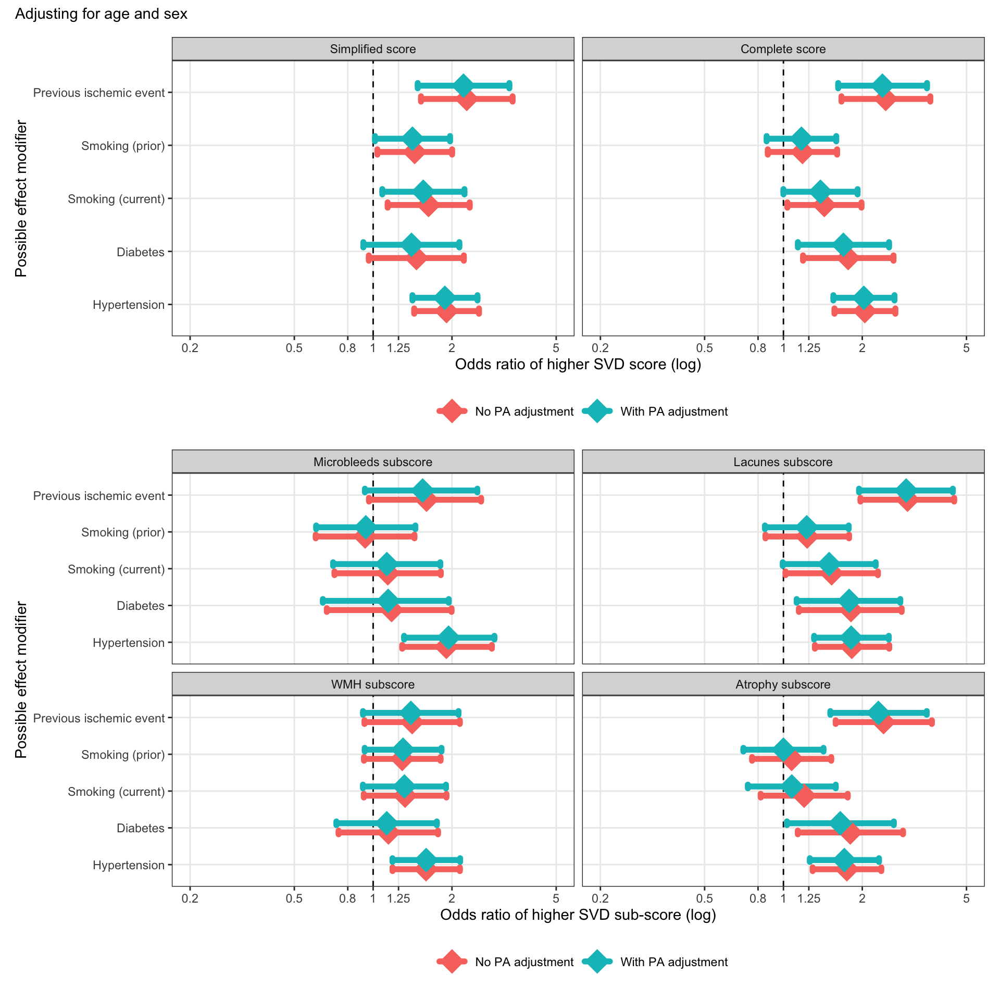
Apparently, this is due to a biased inclusion. Participants smoking are significantly younger, as the older smokers either stopped (prior) or died.
Characteristic |
never |
current |
prior |
p-value 2 |
|---|---|---|---|---|
| Simplified score | 0.006 | |||
| 0 | 127 (47%) | 90 (43%) | 88 (34%) | |
| 1 | 60 (22%) | 63 (30%) | 65 (25%) | |
| 2 | 45 (17%) | 40 (19%) | 59 (23%) | |
| 3 | 24 (8.9%) | 11 (5.2%) | 36 (14%) | |
| 4 | 13 (4.8%) | 7 (3.3%) | 14 (5.3%) | |
| Female sex | 113 (42%) | 70 (33%) | 85 (32%) | 0.041 |
| Age | 72 (63, 80) | 64 (57, 74) | 74 (67, 81) | <0.001 |
| Hypertension | 140 (52%) | 105 (50%) | 159 (61%) | 0.037 |
| Diabetes | 28 (10%) | 18 (8.5%) | 37 (14%) | 0.14 |
| 1
n (%); Median (Q1, Q3) |
||||
| 2
Pearson’s Chi-squared test; Kruskal-Wallis rank sum test |
||||
Data evaluation
Ordinal logistic regression with PASE quartile as outcome indicates a strong correlation
Assumptions evaluation of a multivariable OLR model PASE stands out with high VIF indicating severe collinarity.
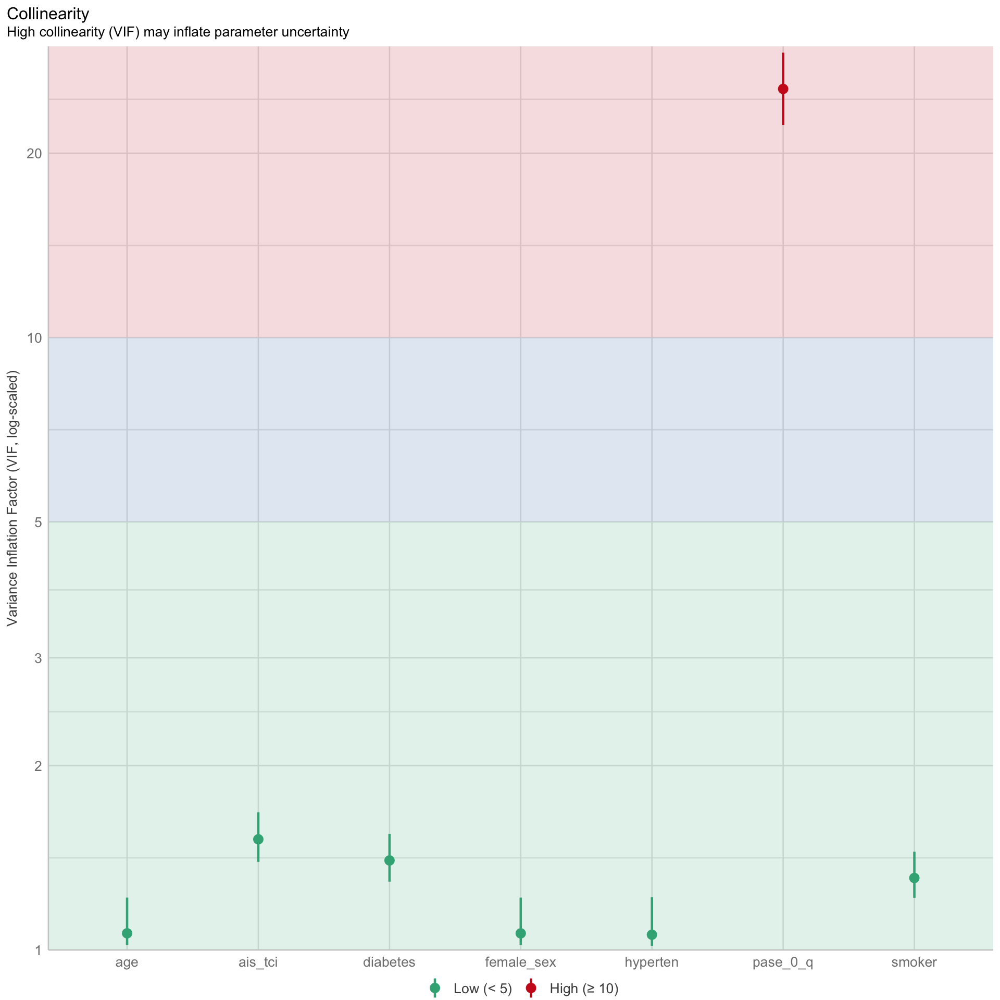
This needs further investigation
First step is a simple table overview
Characteristic |
Q1 |
Q2 |
Q3 |
Q4 |
p-value 2 |
|---|---|---|---|---|---|
| Age | 77 (67, 84) | 74 (65, 80) | 70 (63, 76) | 64 (55, 73) | <0.001 |
| Female sex | 85 (45%) | 89 (47%) | 58 (31%) | 47 (25%) | <0.001 |
| Hypertension | 123 (65%) | 114 (60%) | 96 (51%) | 85 (45%) | <0.001 |
| Diabetes | 27 (14%) | 27 (14%) | 19 (10%) | 12 (6.3%) | 0.040 |
| Smoking | 0.6 | ||||
| never | 57 (31%) | 75 (40%) | 69 (38%) | 68 (36%) | |
| current | 56 (31%) | 45 (24%) | 53 (29%) | 57 (30%) | |
| prior | 70 (38%) | 66 (35%) | 62 (34%) | 64 (34%) | |
| Previous ischemic event | 30 (16%) | 24 (13%) | 27 (14%) | 16 (8.4%) | 0.14 |
| Simplified score | <0.001 | ||||
| 0 | 49 (26%) | 72 (38%) | 81 (43%) | 108 (57%) | |
| 1 | 47 (25%) | 53 (28%) | 42 (22%) | 53 (28%) | |
| 2 | 54 (28%) | 42 (22%) | 37 (20%) | 15 (7.9%) | |
| 3 | 30 (16%) | 14 (7.3%) | 19 (10%) | 10 (5.2%) | |
| 4 | 11 (5.8%) | 10 (5.2%) | 10 (5.3%) | 5 (2.6%) | |
| Complete score | 4.00 (2.00, 5.00) | 3.00 (2.00, 4.00) | 3.00 (1.00, 5.00) | 2.00 (1.00, 3.00) | <0.001 |
| 1
Median (Q1, Q3); n (%) |
|||||
| 2
Kruskal-Wallis rank sum test; Pearson’s Chi-squared test |
|||||
Second step is univariable regression analyses with PASE as outcome
Characteristic |
N |
OR 1 |
95% CI 1 |
|---|---|---|---|
| Age | 762 | 0.95 | 0.94, 0.96 |
| Female sex | 762 | 0.52 | 0.40, 0.68 |
| Hypertension | 761 | 0.57 | 0.44, 0.73 |
| Diabetes | 761 | 0.58 | 0.39, 0.86 |
| Smoking | 742 | ||
| never | — | — | |
| current | 0.97 | 0.70, 1.33 | |
| prior | 0.86 | 0.64, 1.17 | |
| Previous ischemic event | 758 | 0.69 | 0.47, 1.00 |
| 1
OR = Odds Ratio, CI = Confidence Interval |
|||
Univariable regression analyses
Age correlates strongly to PASE.
Third and last step is trying to take out age and sex.
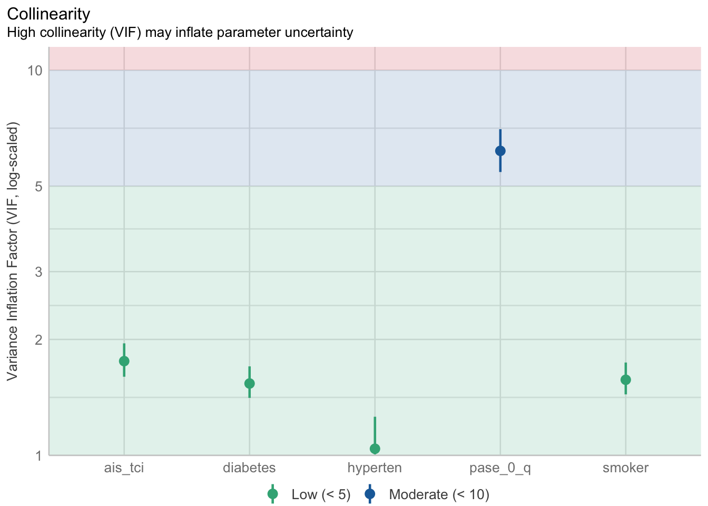
Comparing models shows the first is the better performing. Bum bum…
# Comparison of Model Performance Indices
Name | Model | RMSE | Sigma | AIC weights | AICc weights | BIC weights | Performance-Score
--------------------------------------------------------------------------------------------
m1 | polr | 11.011 | 1.986 | 1.00 | 1.00 | 1.00 | 80.00%
m2 | polr | 11.011 | 2.061 | 1.87e-49 | 2.13e-49 | 1.87e-47 | 20.00%OLR with full SVD-score as outcome
Characteristic |
Univariable |
Multivariable |
|||
|---|---|---|---|---|---|
N |
OR 1 |
95% CI 1 |
OR 1 |
95% CI 1 |
|
| Hypertension | 761 | 3.31 | 2.55, 4.31 | 2.82 | 2.16, 3.70 |
| Diabetes | 761 | 1.73 | 1.17, 2.56 | 1.31 | 0.88, 1.95 |
| Smoking | 742 | ||||
| never | — | — | — | — | |
| current | 0.90 | 0.65, 1.23 | 0.90 | 0.65, 1.24 | |
| prior | 1.52 | 1.13, 2.06 | 1.33 | 0.99, 1.80 | |
| Previous ischemic event | 758 | 2.79 | 1.90, 4.11 | 2.29 | 1.54, 3.40 |
| Pre-stroke PA quartile | 762 | ||||
| Q1 | — | — | — | — | |
| Q2 | 0.62 | 0.43, 0.87 | 0.63 | 0.44, 0.90 | |
| Q3 | 0.57 | 0.40, 0.82 | 0.66 | 0.46, 0.95 | |
| Q4 | 0.27 | 0.19, 0.39 | 0.34 | 0.23, 0.49 | |
| 1
OR = Odds Ratio, CI = Confidence Interval |
|||||
Old model for reference
Characteristic |
Univariable |
Multivariable |
|||
|---|---|---|---|---|---|
N |
OR 1 |
95% CI 1 |
OR 1 |
95% CI 1 |
|
| Age | 762 | 1.11 | 1.10, 1.12 | 1.10 | 1.09, 1.12 |
| Female sex | 762 | 1.03 | 0.80, 1.34 | 0.73 | 0.56, 0.96 |
| Hypertension | 761 | 3.31 | 2.55, 4.31 | 1.87 | 1.42, 2.46 |
| Diabetes | 761 | 1.73 | 1.17, 2.56 | 1.58 | 1.05, 2.38 |
| Smoking | 742 | ||||
| never | — | — | — | — | |
| current | 0.90 | 0.65, 1.23 | 1.38 | 0.99, 1.92 | |
| prior | 1.52 | 1.13, 2.06 | 1.11 | 0.82, 1.51 | |
| Previous ischemic event | 758 | 2.79 | 1.90, 4.11 | 2.18 | 1.47, 3.26 |
| Pre-stroke PA quartile | 762 | ||||
| Q1 | — | — | — | — | |
| Q2 | 0.62 | 0.43, 0.87 | 0.72 | 0.50, 1.03 | |
| Q3 | 0.57 | 0.40, 0.82 | 0.95 | 0.65, 1.39 | |
| Q4 | 0.27 | 0.19, 0.39 | 0.63 | 0.43, 0.94 | |
| 1
OR = Odds Ratio, CI = Confidence Interval |
|||||
Further investigations of the relation between PASE and age.
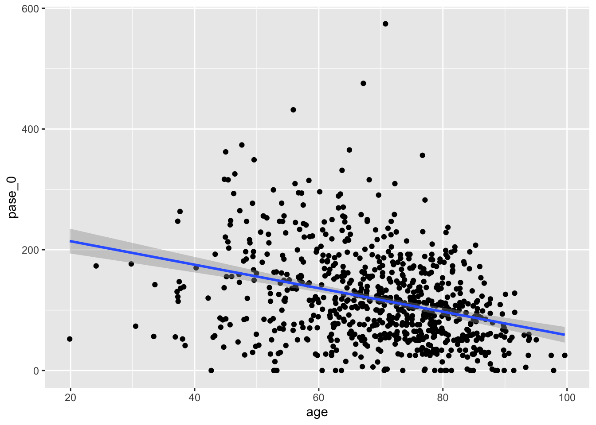
Test of polynomial fit shows 2. degree functions has best fit (lowest AIC)…
[1] 8673.765 8654.574 8655.426 8657.399 8659.127 8661.107.. though both linear (1. degree) and 2. degree have significant p-value.
| pase 0 | |||
| Predictors | Estimates | CI | p |
| (Intercept) | 117.65 | 112.63 – 122.66 | <0.001 |
| age [1st degree] | -683.62 | -822.01 – -545.22 | <0.001 |
| age [2nd degree] | -326.49 | -464.89 – -188.10 | <0.001 |
| age [3rd degree] | 75.44 | -62.96 – 213.83 | 0.285 |
| age [4th degree] | -11.68 | -150.08 – 126.71 | 0.869 |
| Observations | 762 | ||
| R2 | 0.133 | ||
Linear and 2. degree polynomial function visualised.
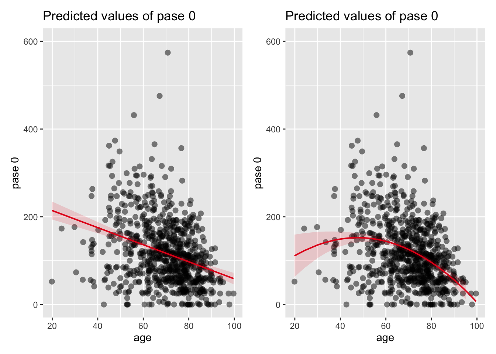
Subscore steps
Idea: evaluate different steps for all sub-scores to evaluate best correlation to clinical predictors for relevant cuts
Same approach as the one employed to illustrate different scoring systems
Different cuts are pre-defined. For each predictor and each sub-score cut, a logistic or ordinal logistic model is created. For each predictor, the model performances are compared to yield the cut, with the best model fit. For each subscore, the cut ranking highest in most predictors is the “Best fit subscores”-scoring system.
Below an overview of the different scoring suggestions for microbleeds as an example:
| Annotation | mic_0_some | mic_0_1_more_many | mic_0_1_more | mic_few_more | mic_some_lots |
|---|---|---|---|---|---|
| 0 | 0 | 0 | 0 | 0 | 0 |
| 1 | 1 | 1 | 1 | 0 | 0 |
| 2-4 | 1 | 2 | 2 | 1 | 0 |
| 5-10 | 1 | 2 | 2 | 1 | 0 |
| >10 | 1 | 3 | 2 | 1 | 1 |
Comparisons for all subscore analyses
[1] "olama_simple_svd" "by_individual_best_fit" "olama_simple_ext_svd"
[4] "huijts_simple_ext_svd" "clinical_assumption" "olama_amended_svd"
[7] "olama_amended_ext_svd" "full_score_svd" Highest ranked scoring systems in order of association to predictors.
| Annotation | simple Olama et al 2020 | Best fit subscores | extended simple Olama et al 2020 | modified Huijts et al 2013 |
|---|---|---|---|---|
| Microbleeds subscore | ||||
| 0 | 0 | 0 | 0 | 0 |
| 1 | 1 | 0 | 1 | 1 |
| 2-4 | 1 | 0 | 1 | 1 |
| 5-10 | 1 | 0 | 1 | 1 |
| >10 | 1 | 1 | 1 | 1 |
| Lacunes subscore | ||||
| 0 | 0 | 0 | 0 | 0 |
| 1 | 0 | 0 | 0 | 1 |
| 2 | 0 | 0 | 0 | 1 |
| 3-5 | 1 | 0 | 1 | 1 |
| >5 | 1 | 1 | 1 | 1 |
| WMH subscore | ||||
| 0: Absent | 0 | 0 | 0 | 0 |
| 1: Punctate foci | 0 | 1 | 0 | 0 |
| 2: Beginning confluence | 1 | 1 | 1 | 1 |
| 3: Large confluent areas | 1 | 1 | 1 | 1 |
| Atrophy subscore | ||||
| 0: No atrophy | 0 | 0 | 0 | 0 |
| 1: Mild | 0 | 0 | 0 | 0 |
| 2: Moderate | 0 | 1 | 1 | 1 |
| 3: Severe | 0 | 1 | 1 | 1 |
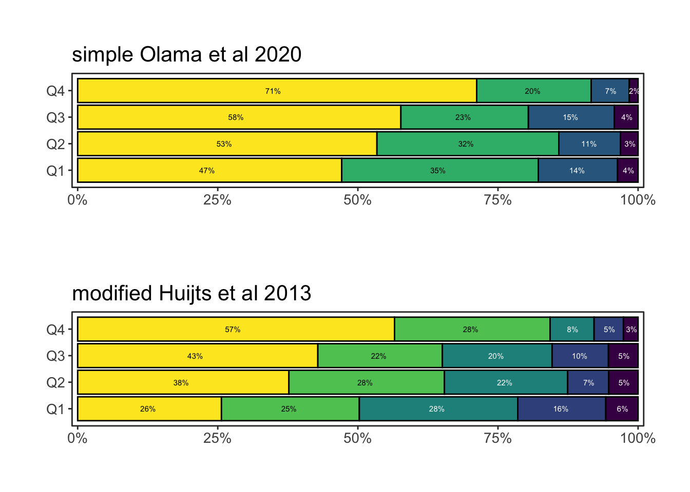
Based on the previous extensive testing, the
Conclusion
Due to collinearity, we should modify the analysis plan to take out age and sex from minimal analysis, as these are highly correlated to PASE score. Univariable/bivariable analysis should be included.
A table with univariable and multivariable analyses could be included, though this poses a risk for multicollinearity as well.
The issue around collinearity is a result on its own.
Smoking patterns needs to be addressed on its own, and should be excluded from analyses due to a severe inclusion bias.